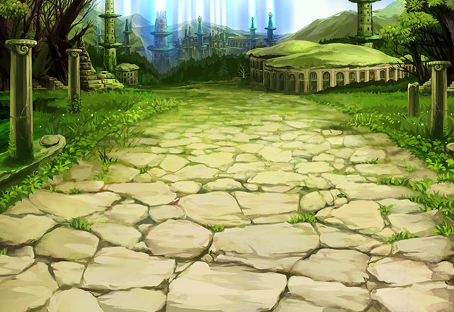

ティリス
いよいよ、アフラ・ディリスの居城が 見えてきたね！
ティリス
あの中にShou-chanと 入るんだよね……。
ティリス
このプリチーな女神様に任せておけば だいじょ～ぶ！！
ティリス
あ、あっちの方があの城が もっとよく見えそうかも。
ティリス
Shou-chanは ゆっくり追いついてきてね。
静かな声
今はエリオールたちとともに 行動をしている。
静かな声
エリオールたちはこの姿から 私のことを黒の隠者と呼んでいる。
黒の隠者
お前は好きに呼ぶがいい。 私に名など必要ないのだからな。
黒の隠者
お前は堕神をすべて倒した後、 その力を何に使う。
黒の隠者
今後、お前の周囲にはその力を 利用しようとする者が無数に現るだろう。
？？？
だからこそ強い意志と、 物事を正しく見定める目が必要になるのだ！
エリオール
黒の隠者よ。 今日は随分とじょう舌だな。
エリオール
堕神との戦いに勝利した後に、 キミとはゆっくり話させてもらうよ。
エリオール
グランガイアに平和をもたらすため 我々とともにその足を前へと進めるのだ！